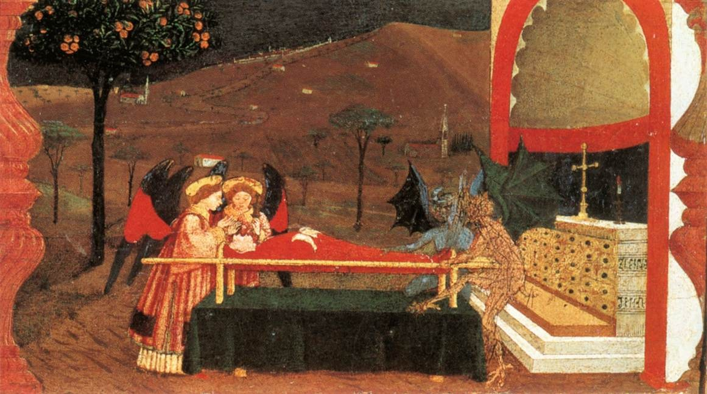

c. 1220–1230Synagoga, Strasbourg Cathedral (facade replica)Original sculpture: workshop of the south transept, c. 1220–1230; Musée de l’Œuvre Notre-DameFacade copy: Fondation de l’Œuvre Notre-DamePhotograph: Rama, 2006 (CC BY-SA 2.0 FR)Photo and license ↗
ERA I · THE THIRD ERA EXHIBITION
ANTI- JUDAISM
When Hatred Became a Sacred Duty
Religious Jew-Hatred: The Origins of Anti-Jewish Libels and Persecution
Before Jews were accused of threatening racial purity, they were accused of violating religious truth. Religious accusations helped transform Jewish communities into targets of fear, exclusion, and violence.
A Genealogy of Christian Anti-Judaism
1305–1340Süßkind of Trimberg, Codex ManesseCreator: Master of the Codex Manesse, Additional Painter IDate: between 1305 and 1340Heidelberg University Library, Cod. Pal. germ. 848, fol. 355rManuscript image and provenance ↗
For centuries, anti-Jewish hatred in Christian Europe was expressed through the language of religion. In societies where Christian faith shaped moral authority, law, and public life, Jews were increasingly portrayed not merely as religious outsiders, but as enemies of God, Christian truth, and the sacred order.
The accusation was not simply that Jews believed differently. It was that Jews threatened everything society held holy.
Early Christian interpretations of responsibility for the death of Jesus contributed to accusations of collective Jewish guilt. Over time, Jews were depicted in some Christian polemical traditions as Christ-killers, enemies of salvation, and servants of evil. Such images provided a framework through which discrimination and persecution could be presented as religiously justified.

1467–1468Miracle of the Profaned HostCreator: Paolo UccelloDate: 1467–1468Predella detail; Galleria Nazionale delle Marche, Urbino, inv. DE 231Museum record ↗
In the Middle Ages, Jews were falsely accused of murdering Christian children for ritual purposes, desecrating the Eucharist, poisoning wells, and conspiring against Christian society. These allegations circulated through sermons, chronicles, visual imagery, and popular stories. The accusations could acquire the force of accepted truth despite the absence of evidence.
The libel transformed the Jew from a religious outsider into an imagined moral monster.
When a child died or a plague spread, Jews could be made into scapegoats. Some accusations served local political and economic interests as well as religious prejudice. Consequences included forced conversions, discriminatory laws, property confiscations, expulsions, and massacres, notably during the Crusades and the Black Death.
This history was not uniform: Jewish communities also experienced coexistence, protection, and cultural flourishing. The Three Eras interpretive framework associated with Dr. Naya Lekht highlights a recurring mechanism: identify society's highest moral good, falsely accuse Jews of violating it, and portray hostility toward Jews as a defense of that good.
Three Libels. Centuries of Persecution.
Explore the accusations that transformed Jewish communities into targets of fear, exclusion, and violence.
The Deicide Libel
The deicide libel falsely assigned collective and inherited responsibility for Jesus' crucifixion to the Jewish people. Jesus was executed under Roman authority, but some Christian teachings extended blame to Jews across generations. Passion narratives and polemics helped sustain this charge, contributing to discrimination and violence.
The Accusation That Jews Killed God
The accusation: All Jews, across generations, were guilty of killing Christ. The historical reality: Collective guilt is unjustified. The Catholic Church repudiated the attribution of Christ's death to all Jews in Nostra Aetate (1965).
Historical sequence: Early Christian polemics · Medieval Passion imagery · Crusader-era violence beginning in 1096 · Nostra Aetate (1965).
1493Simon of Trent in the Nuremberg ChronicleCreator: Workshop of Michael Wolgemut and Wilhelm PleydenwurffDate: 1493
The Blood Libel
The blood libel falsely alleged that Jews murdered Christian children and used their blood in religious rituals, especially at Passover. The accusation surrounding William of Norwich in 1144 became a formative medieval case. Similar stories circulated through sermons, chronicles, and images, contributing to trials, torture, executions, and persecution.
The Fabricated Accusation of Ritual Murder
The accusation: Jews murdered Christian children to use their blood in rituals. The historical reality: The accusation was fabricated; Jewish religious law prohibits the consumption of blood.
Historical sequence: Norwich (1144) · Blois (1171) · Lincoln (1255) · Trent (1475) · Later antisemitic propaganda.
c. 1352–1353Burning of Jews during the Black DeathCreator: Piérart dou TieltIllustration: c. 1352–1353; depicted persecutions: 1348–1351Gilles li Muisis, Antiquitates Flandriae (Tractatus quartus)KBR, Brussels, MS 13076–77, fol. 12vImage provenance ↗
The Well-Poisoning Libel
During the Black Death of 1347–1351, Jews were falsely accused of contaminating wells and spreading plague. Torture-induced confessions and rumors contributed to attacks, expulsions, and massacres. Jewish communities themselves suffered from the epidemic. In Strasbourg in 1349, many Jews were killed amid plague-related accusations and local political and economic conflict.
Blaming Jews for the Black Death
The accusation: Jews poisoned water supplies to spread disease. The historical reality: No Jewish conspiracy caused the plague, which was caused by Yersinia pestis.
Historical sequence: Black Death in Europe (1347) · Accusations and coerced confessions (1348) · Massacres including Strasbourg (1349).
The Cycle of Libels: How a False Accusation Became a Justification for Persecution
The following six stages are a historical interpretive framework, not a claim that every episode followed an identical sequence. Denial and erasure can help preserve or revive an earlier libel.
01 · LIBEL
Invent the Accusation
Falsely accuse Jews of violating a society's most sacred values.
02 · DEMONIZATION
Create the Enemy
Portray Jews as dangerous enemies of God, morality, and society.
03 · NORMALIZATION
Make Hatred Acceptable
Spread the accusation through sermons, imagery, and public discourse.
04 · EXCLUSION
Remove Jews from Society
Legitimize segregation, restrictions, expulsions, and forced conversions.
05 · HOSTILITY
Justify Persecution and Violence
Present attacks and massacres as protective or righteous actions.
06 · DENIAL & ERASURE
Distort or Erase the Truth
Minimize, justify, or omit Jewish suffering and historical facts.
The libel created the enemy. Demonization justified persecution. Denial and erasure helped preserve the lie.
From Anti-Judaism to Era II — Antisemitism
The Language Changed. The Libels Endured.
As European societies changed, older religious stereotypes were increasingly recast in secular, nationalist, and racial terms. The Jew once accused of threatening Christian truth could now be depicted as a threat to racial purity or national identity. Religious and racial forms of hostility overlapped; this was not a clean chronological replacement.
In the first era, Jews were accused of violating religious truth. In the second, they would be accused of threatening racial purity.
What is the difference between religious anti-Judaism and modern racial antisemitism?
Religious anti-Judaism portrayed Jews as enemies of Christian truth or salvation. Modern racial antisemitism increasingly cast Jewish identity as inherited and immutable, alleging that Jews threatened racial purity or the nation. The two forms often overlapped.
What was the earliest recorded blood libel in medieval Europe?
The accusation involving William of Norwich in 1144 is generally considered the first well-documented medieval European ritual-murder libel. Thomas of Monmouth's account helped disseminate the false story. Earlier ritual-murder accusations existed in other contexts.
How were Jews blamed for the Black Death?
Rumors claimed Jews poisoned wells to spread plague. Some confessions were extracted under torture, then used to validate false allegations. Jewish communities also suffered from the disease, yet many were attacked or expelled during the epidemic.
Scholarly Sources & Object Records
The exhibition's Three Eras interpretive framework is associated with the scholarship of Dr. Naya Lekht. The historical claims and museum objects are grounded in additional research and archival records.
Curatorial note: Historical defamatory imagery is presented as evidence of anti-Jewish propaganda, not as evidence that the accusations were true. Image rights and photographic attribution should be rechecked before public deployment.